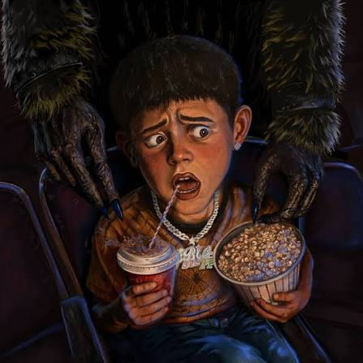
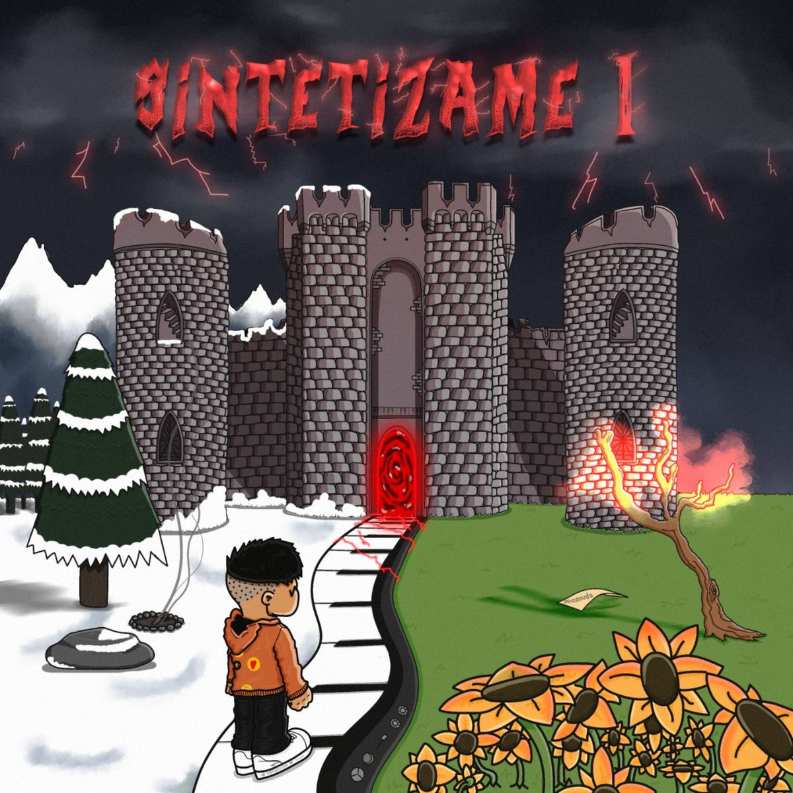
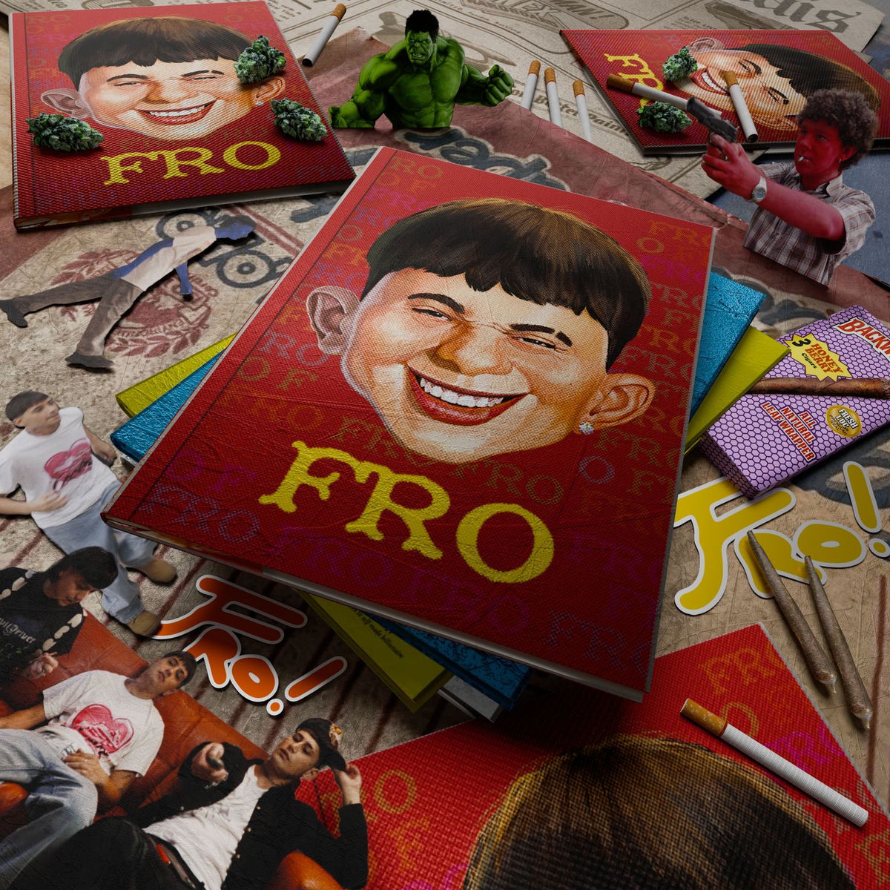

+400k
de oyentes mensuales4.3M
en su cancion mas famosa4
albumes en su carrera86
canciones en totalBiografía
Empezo su carrera en 2020 con el tema "Mi soledad", siendo el unico que saco ese año. Luego en 2021 saco temas como "Mentiras&Hoes" o "Drip", y tambien saco su priemr ep "Otra Visión" que cuenta con 4 temas.
En 2022 saco su primer album "Sintetizame I", el que cuenta con 7 temas y 3 colaboraciones, siendo estas Zell, Knak y Asan. En 2023 saco su segundo ep "polifaze" que cuenta con una colaboracion con Knak. En 2024 saco su tercer ep "duda", un tema con doly flackko titulado "mucho inconveniente" y otro con ramma llamdo "bali". 2025 fue su mejor año hasta la fecha, ya que en es saco la cancion que lo catapulto a la fama, y que es su cancion mas famosa, "quitate los jeans". Tambien saco dos albumes "FRO!", qe cuenta con 11 canciones y colaboraciones con Juicynise, Knak, Clúster y pabloxo, y "FRO!2" que cuenta con 7 canciones y colaboraciones con Clúster y cero. Este año tambien saco otro ep tittulado "solo pasos GRANDES" contando con 5 temas.
En la actualidad, FRO saco su cuarto y mas ambicioso album titulado "#bigsteppa" el cual cuenta con 15 canciones y colaboraciones con Zell, Doly Flackko, Clúster, Fanta Rosario, Tiago PZK y pabloxo. Con este album logro hacer sold out en su mas reciente concierto en el C art media
Éxitos
- Cancion mas famosa: Quitate los jeans con mas de 4 millones de reproducciones
- #bigsteppa fue su ultimo album con el que esta haciendo una gira por Argentina
- Cuenta ya con 2 sold outs en conciertos en su pais

Discografía

Sintetizame
primer album - 7 canciones.

FRO!
Segundo album - 11 canciones.
FRO!2
Tercer album - 7 canciones.
#bigsteppa
Cuarto album - 15 canciones.